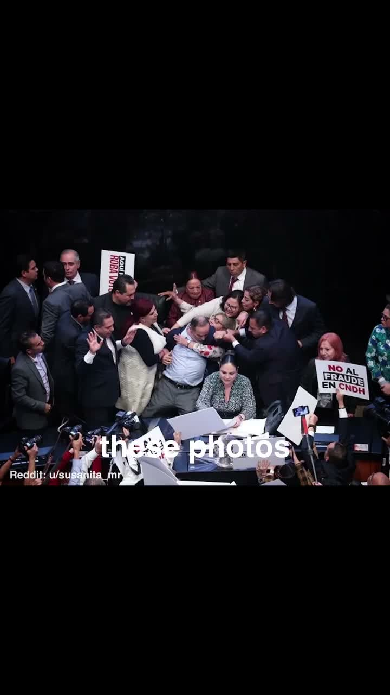
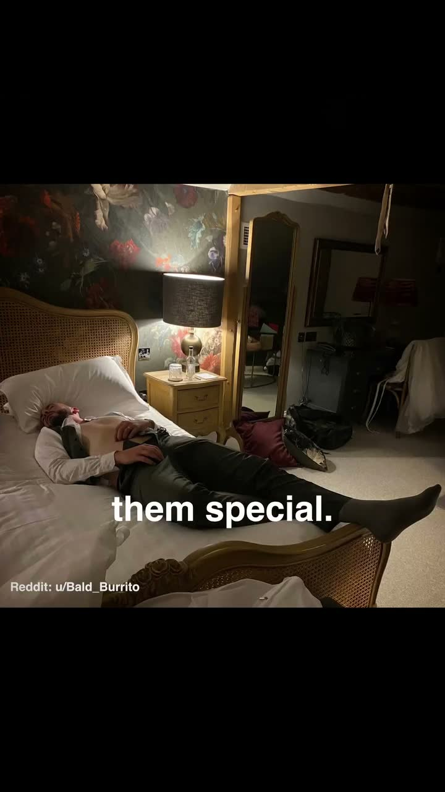
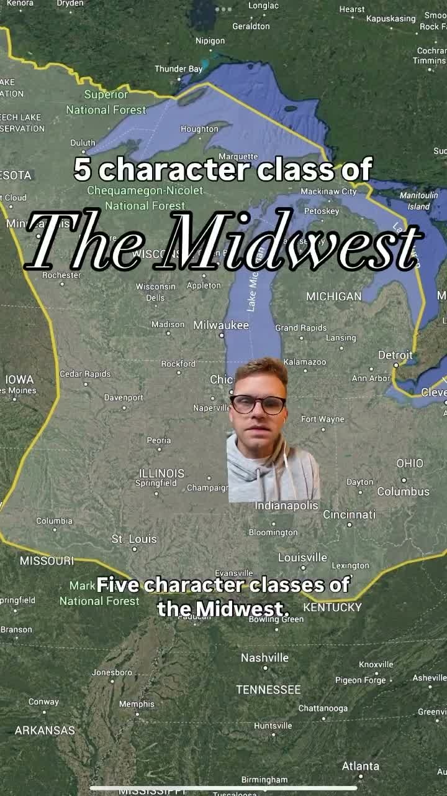
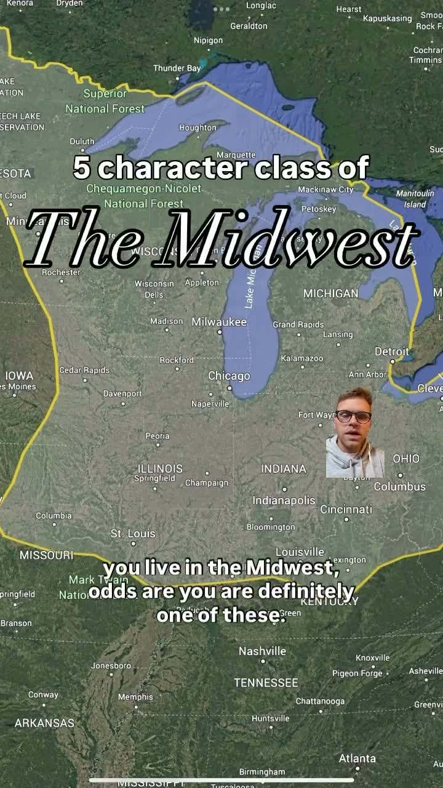

This cluster is about how visual taste is anchored in bodies, cities, materials, and moral claims. Fashion guides, beauty polemics, poster systems, scanned textures, and visual-reference accounts all treat aesthetics as something learned through looking closely at place, craft, history, and material evidence.
| Name | Type | Referenced by |
|---|---|---|
| John Ruskin | critic / writer | @thewaronbeauty |
| Plato | philosopher | @thewaronbeauty |
| Issey Miyake | designer / fashion house | @stylebykvn |
| Courreges | fashion house | @stylebykvn |
| Vogue / Met Gala | fashion media production | @andreyazizov |
| TRASHSCAN | texture pack | @andreyazizov |
| Azzedine Alaia Foundation | fashion museum | @stylebykvn |



